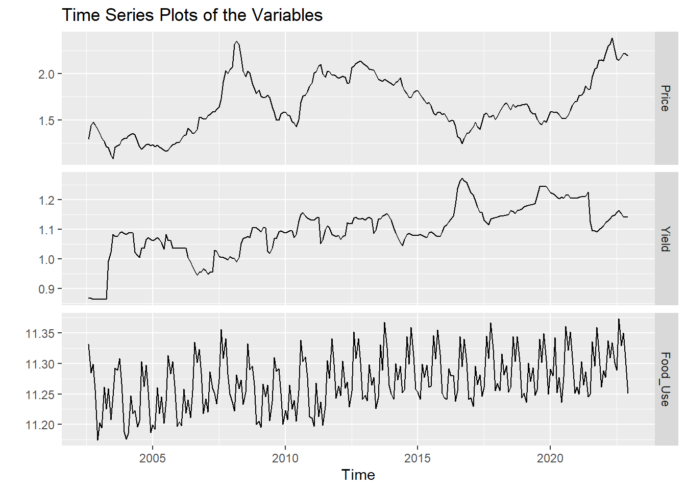
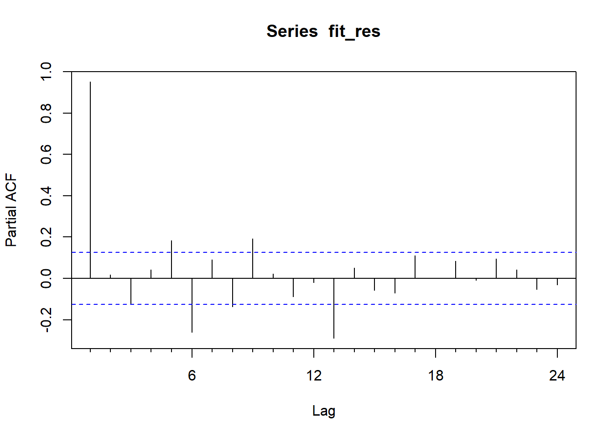
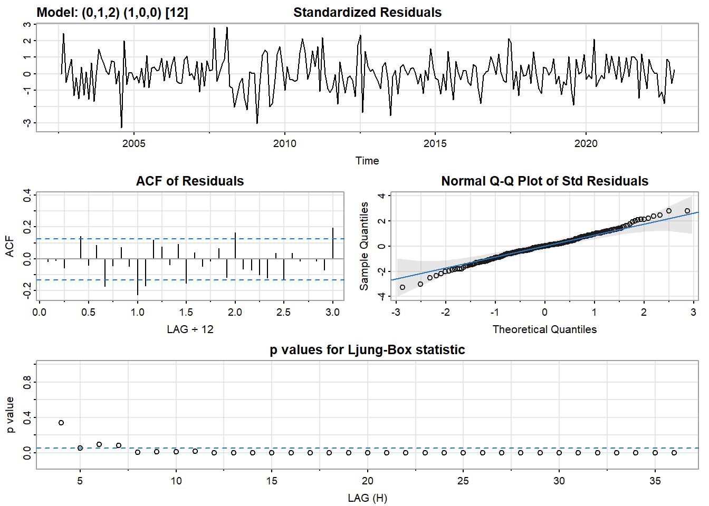

ARIMAX/SARIMAX/VAR
This tab will focus on fitting ARIMAX/SARIMAX model or VAR/VARMA model to find the relationships between the time series variables.
Therefore, this part mainly answers the question how the measures of wheat affect the price of wheat (dollars per bushel) in USA. These measures include the yield (tonnes per hectare), and the amount of food use (bushels). These variables record the situation of wheat production and usage, therefore will have impacts on the price of wheat in USA.
The Variables
First, read the data set, then make a plot of the time series predictors:
Code
wheat = read.csv("./HW4/USA_Wheat.csv", sep=",")
wheat = wheat[,c(1,3,4,5,6,7)]
wheat$Yield = na.approx(wheat$Yield)
wheat$Food_Use = as.numeric(gsub(",", "", wheat$Food_Use))
# wheat$Import = as.numeric(gsub(",", "", wheat$Import))
# wheat$Export = as.numeric(gsub(",", "", wheat$Export))
start_date = c(2002, 8)
wheat_ts = ts(wheat, start=start_date, frequency=12)
autoplot(wheat_ts[,c(3,2,4)], facets=TRUE)+
xlab("Time")+ylab("")+ggtitle("Time Series Plots of the Variables")In order to put the data on a better scale, I will do a log transformation:
Code
lg.wheat = wheat
lg.wheat$Price = log(wheat$Price)
lg.wheat$Yield = log(wheat$Yield)
lg.wheat$Food_Use = log(wheat$Food_Use)
# lg.wheat$Import = log(wheat$Import)
# lg.wheat$Export = log(wheat$Export)
wheat_ts = ts(lg.wheat, start=start_date, frequency=12)
autoplot(wheat_ts[,c(3,2,4)], facets=TRUE)+
xlab("Time")+ylab("")+ggtitle("Time Series Plots of the Variables")
We can see that the time series all have a increasing trend, while there is obvious seasonality for the amount of food use.
Fitting the Model Using `auto.arima`
First, this function will be used to fit the ARIMAX model, and the exogenous (predictor) variables are Yield and Food_Use.
Code
xreg = cbind(yield = wheat_ts[,"Yield"],
food = wheat_ts[,"Food_Use"])
fit_auto = auto.arima(wheat_ts[,"Price"], xreg=xreg)
summary(fit_auto)Series: wheat_ts[, "Price"]
Regression with ARIMA(0,1,2)(1,0,0)[12] errors
Coefficients:
ma1 ma2 sar1 yield food
0.4264 0.0807 -0.0103 -0.3092 0.1463
s.e. 0.0665 0.0655 0.0684 0.1520 0.0551
sigma^2 = 0.002313: log likelihood = 396.68
AIC=-781.36 AICc=-781 BIC=-760.37
Training set error measures:
ME RMSE MAE MPE MAPE MASE
Training set 0.002698144 0.04749694 0.03430143 0.1413272 2.063324 0.1604087
ACF1
Training set -0.01739135Code
checkresiduals(fit_auto)
Ljung-Box test
data: Residuals from Regression with ARIMA(0,1,2)(1,0,0)[12] errors
Q* = 13.793, df = 21, p-value = 0.8783
Model df: 3. Total lags used: 24From the summary, the `auto.arima` function creates a SARIMAX model, a regression model with ARIMA(0,1,2)(1,0,0)[12] errors. From the Ljung-Box test, the residuals should be independent according to a p-value larger than 0.05, and this means the model fits the time series well. From the Q-Q plot we can also see that basically the residuals form a normal distribution.
Fitting the Model Manually
Having the linear regression model predicting wheat price using yield and food use, for the residuals I will fit an ARIMA/SARIMA model.
Code
tsdf = lg.wheat[,c(1:4)]
tsdf$Yield = ts(tsdf$Yield, start=start_date, frequency=12)
tsdf$Food_Use = ts(tsdf$Food_Use, start=start_date, frequency=12)
tsdf$Price = ts(tsdf$Price, start=start_date, frequency=12)
fit_reg = lm(Price~Yield+Food_Use, data=tsdf)
# summary(fit_reg)
fit_res = ts(residuals(fit_reg), start=start_date, frequency=12)Look at the residuals:
Code
acf(fit_res)
Code
Pacf(fit_res)
Looks like the residuals is heavily auto correlated and not stationary. So I will first try with a normal differencing:
Code
fit_res %>% diff() %>% ggtsdisplay()
Still not good enough, therefore I will add a seasonal differencing:
Code
fit_res %>% diff() %>% diff(12) %>% ggtsdisplay()
Finding the Model Parameters
Based on the plots, I will choose a set of values for the parameters: d=D=1, p=[1,2,3], q=[1,2,3], P=[1,2], Q=[1,2].
Code
SARIMA.c = function(ps,qs,Ps,Qs,df){
scores = matrix(rep(NA, 9*36), nrow=36, ncol=9)
d=1
D=1
s=12
i=1
for (p in ps){
for (q in qs){
for (P in Ps){
for (Q in Qs){
model = Arima(df, order=c(p-1,d,q-1), seasonal=c(P-1,D,Q-1))
scores[i,] = c(p-1,d,q-1,P-1,D,Q-1,model$aic,model$bic,model$aicc)
i=i+1
}
}
}
}
scores = as.data.frame(scores)
colnames(scores) = c("p","d","q","P","D","Q","AIC","BIC","AICc")
scores
}
output = SARIMA.c(ps=c(1,2,3), qs=c(1,2,3), Ps=c(1,2), Qs=c(1,2), df=fit_res)
output p d q P D Q AIC BIC AICc
1 0 1 0 0 1 0 -506.7858 -503.3391 -506.7684
2 0 1 0 0 1 1 -643.4813 -636.5878 -643.4289
3 0 1 0 1 1 0 -575.2285 -568.3351 -575.1761
4 0 1 0 1 1 1 -643.7872 -633.4470 -643.6820
5 0 1 1 0 1 0 -534.3747 -527.4812 -534.3223
6 0 1 1 0 1 1 -662.7142 -652.3740 -662.6089
7 0 1 1 1 1 0 -597.5658 -587.2256 -597.4606
8 0 1 1 1 1 1 -662.1226 -648.3357 -661.9464
9 0 1 2 0 1 0 -534.0560 -523.7158 -533.9508
10 0 1 2 0 1 1 -663.3070 -649.5200 -663.1307
11 0 1 2 1 1 0 -598.8966 -585.1096 -598.7204
12 0 1 2 1 1 1 -662.9045 -645.6709 -662.6391
13 1 1 0 0 1 0 -533.3746 -526.4811 -533.3222
14 1 1 0 0 1 1 -663.8113 -653.4711 -663.7060
15 1 1 0 1 1 0 -599.6166 -589.2764 -599.5113
16 1 1 0 1 1 1 -663.3964 -649.6095 -663.2202
17 1 1 1 0 1 0 -533.4232 -523.0830 -533.3179
18 1 1 1 0 1 1 -662.1953 -648.4084 -662.0191
19 1 1 1 1 1 0 -597.8183 -584.0314 -597.6421
20 1 1 1 1 1 1 -661.6768 -644.4432 -661.4114
21 1 1 2 0 1 0 -533.9757 -520.1888 -533.7995
22 1 1 2 0 1 1 -663.2445 -646.0108 -662.9790
23 1 1 2 1 1 0 -598.1932 -580.9596 -597.9278
24 1 1 2 1 1 1 -662.9587 -642.2783 -662.5854
25 2 1 0 0 1 0 -534.1136 -523.7734 -534.0083
26 2 1 0 0 1 1 -662.3847 -648.5977 -662.2085
27 2 1 0 1 1 0 -597.8694 -584.0824 -597.6932
28 2 1 0 1 1 1 -661.8222 -644.5885 -661.5567
29 2 1 1 0 1 0 -532.1390 -518.3521 -531.9628
30 2 1 1 0 1 1 -660.2318 -642.9981 -659.9663
31 2 1 1 1 1 0 -595.8844 -578.6507 -595.6189
32 2 1 1 1 1 1 -659.9228 -639.2424 -659.5495
33 2 1 2 0 1 0 -532.7373 -515.5036 -532.4718
34 2 1 2 0 1 1 -662.2417 -641.5613 -661.8684
35 2 1 2 1 1 0 -596.4577 -575.7773 -596.0843
36 2 1 2 1 1 1 -662.0553 -637.9282 -661.5553It is obvious that the best model here is ARIMA(1,1,0)(0,1,1)[12], while `auto.arima` suggested ARIMA(0,1,2)(1,0,0)[12].
Let’s do some model diagnosis about this model.
Code
set.seed(140)
model_output110 = capture.output(sarima(fit_res,1,1,0,0,1,1,12))
Code
cat(model_output110[23:52], model_output110[length(model_output110)], sep="\n")converged
$fit
Call:
arima(x = xdata, order = c(p, d, q), seasonal = list(order = c(P, D, Q), period = S),
include.mean = !no.constant, transform.pars = trans, fixed = fixed, optim.control = list(trace = trc,
REPORT = 1, reltol = tol))
Coefficients:
ar1 sma1
0.3072 -1.0000
s.e. 0.0634 0.1139
sigma^2 estimated as 0.002791: log likelihood = 334.91, aic = -663.81
$degrees_of_freedom
[1] 230
$ttable
Estimate SE t.value p.value
ar1 0.3072 0.0634 4.8457 0
sma1 -1.0000 0.1139 -8.7783 0
$AIC
[1] -2.861256
$AICc
[1] -2.86103
$BICCode
model_output012 = capture.output(sarima(fit_res,0,1,2,1,0,0,12))
Code
cat(model_output012[20:50], model_output012[length(model_output110)], sep="\n")iter 5 value -2.675943
iter 6 value -2.675944
iter 7 value -2.675945
iter 8 value -2.675946
iter 9 value -2.675947
iter 10 value -2.675947
iter 10 value -2.675947
final value -2.675947
converged
$fit
Call:
arima(x = xdata, order = c(p, d, q), seasonal = list(order = c(P, D, Q), period = S),
xreg = constant, transform.pars = trans, fixed = fixed, optim.control = list(trace = trc,
REPORT = 1, reltol = tol))
Coefficients:
ma1 ma2 sar1 constant
0.2726 0.1086 0.5898 0.0038
s.e. 0.0713 0.0729 0.0583 0.0137
sigma^2 estimated as 0.004639: log likelihood = 306.71, aic = -603.42
$degrees_of_freedom
[1] 240
$ttable
Estimate SE t.value p.value
ma1 0.2726 0.0713 3.8225 0.0002
ma2 0.1086 0.0729 1.4896 0.1377
sar1 0.5898 0.0583 10.1240 0.0000
[1] -2.473033Use CV to Find the Best Model
Since the two models above do not have much advantage over each other, in this step cross validation will be used to look for the optimal model, with RMSE plots.
Code
n = length(fit_res)
k = 65
rmse1 = rmse2 = matrix(NA,15,12)
st = tsp(fit_res)[1]+(k-1)/12
for (i in 1:15){
xtrain = window(fit_res, end=st+i-1)
xtest = window(fit_res, start=st+i-1+1/12, end=st+i)
fit1 = Arima(xtrain, order=c(1,1,0), seasonal=list(order=c(0,1,1),period=12),
include.drift=TRUE, method="ML")
fcast1 = forecast(fit1, h=12)
fit2 = Arima(xtrain, order=c(0,1,2), seasonal=list(order=c(1,0,0),period=12),
include.drift=TRUE, method="ML")
fcast2 = forecast(fit2, h=12)
rmse1[i,1:length(xtest)] = sqrt((fcast1$mean-xtest)^2)
rmse2[i,1:length(xtest)] = sqrt((fcast2$mean-xtest)^2)
}
plot(1:12, colMeans(rmse1, na.rm=TRUE), type="l", col=2, xlab="Horizon", ylab="RMSE")
lines(1:12, colMeans(rmse2, na.rm=TRUE), type="l", col=3)
legend("topleft", legend=c("my fit", "auto fit"), col=2:3, lty=1)
Based on the result of the cross validation, my optimal fit ARIMA(1,1,0)(0,1,1)[12] is better since it has lower RMSE.
Code
xreg = cbind(yield = tsdf[,"Yield"],
food = tsdf[,"Food_Use"])
fit = Arima(tsdf[,"Price"], order=c(1,1,0), seasonal=c(0,1,1), xreg=xreg)
summary(fit)Series: tsdf[, "Price"]
Regression with ARIMA(1,1,0)(0,1,1)[12] errors
Coefficients:
ar1 sma1 yield food
0.3606 -1.0000 -0.2964 0.0762
s.e. 0.0630 0.0782 0.1519 0.2169
sigma^2 = 0.002217: log likelihood = 363.64
AIC=-717.29 AICc=-717.02 BIC=-700.05
Training set error measures:
ME RMSE MAE MPE MAPE MASE
Training set -7.128984e-05 0.04541963 0.03282718 -0.01445618 1.957385 0.1535144
ACF1
Training set 0.04637381From the summary of the fit, it can be determined that the equation of the model is:
\[ y_t = −0.2964x_{1,t}+0.0762x_{2,t}+u_t \\ u_t = (1+0.3606B)(1−B^4)ε_t. \]
Forecasting
In order to forecast the price of wheat, I need to have forecasts of yield and the food use first. Then the obtained forecasts will be used to find the prediction of the price.
Code
fit_yield = Arima(tsdf$Yield, order=c(1,1,0), seasonal=list(order=c(0,1,1),period=12))
fyield = forecast(fit_yield, h=24)
fit_food = Arima(tsdf$Food_Use, order=c(1,1,0), seasonal=list(order=c(0,1,1),period=12))
ffood = forecast(fit_food, h=24)
fxreg = cbind(Yield=fyield$mean, Food=ffood$mean)
fcast = forecast(fit, xreg=fxreg)
autoplot(fcast)+xlab("Time")+ylab("Price")
From the forecast plot, it seems that the prediction of the wheat price for the next two years follows the trend of the original time series, with a large confidence band. It seems that the result is not very nice.